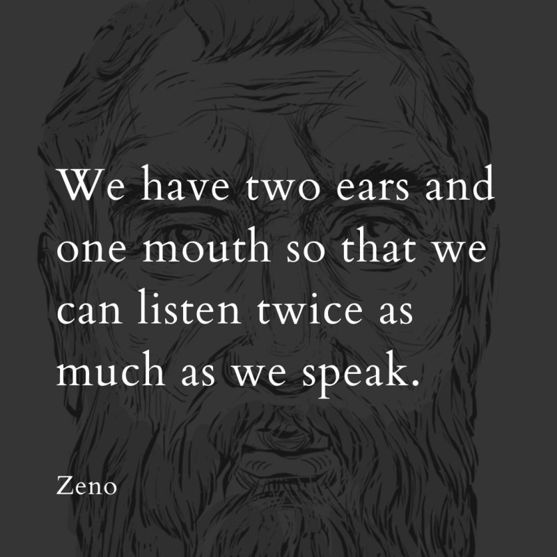

With all this talk of AI taking over our lives, recently I was thinking about languages and translations. More specifically, I have started appreciating the nuances and complexities that go behind linguistics. It’s something we take for granted but languages shape our culture, history and society. After all, “history is written by victors.”
Think about it. Everything we now consider as ‘facts’ were at one point in time recorded as texts in some archaic language like Hebrew, Aramaic or Latin. Eventually, someone sat down and decided to undertake this cumbersome process of decoding what the source language was and then translating it into a native language.
Eventually it got me thinking about the process of knowledge transfer and how information is passed on:
1) Event X happens
2) Event gets recorded by someone
3) We learn about Event X
Sounds pretty straightforward, right? Except it’s not.
Let’s say I try to recall everything that happened on June 21, 2015. That in itself is something hard to do. I will first have to ask myself “How old was I in 2015?, Where was I in 2015?, Who was there with me?”
Already my memory is starting to fail on me. I maybe able to recall some of the facts that transpired that day, but for everything else my brain will literally fill in the blanks - some of it maybe complete fabrication of details or I may simply not remember.
Even if I were to jot it down and preserve it in a time capsule so that someone from the future were to read about it; they will literally have to take my word for it (unless of course humanity comes up with a technology to figure out a way to validate historical events. I think the words I am looking for are ‘time machine’.).
Now imagine if my brother was tasked with the same assignment - “Describe everything that happened to Aryamik on June 21, 2015.” This further adds more complexities. We are basically asking another individual to describe the events from my point of view. If I can’t accurately describe what happened 10 years ago, how can I expect someone else to describe my experiences? This is the where the debate between factual accuracies of autobiographies and biographies comes in.
Consider this excerpt from The Lives and Opinions of Eminent Philosophers by Diogenes Laertius:
And besides his [Zeno] Republic, he was the author also of the following works:—a treatise on a Life according to Nature; one on Appetite, or the Nature of Man; one on Passions; one on the Becoming; one on Law; one on the usual Education of the Greeks; one on Sight; one on the Whole; one on Signs; one on the Doctrines of the Pythagoreans; one on Things in General; one on Styles; five essays on Problems relating to Homer; one on the Bearing of the Poets. There is also an essay on Art by him, and two books of Solutions and Jests, and Reminiscences, and one called the Ethics of Crates. These are the books of which he was the author.
My first thought when I read this was : “Wow. Zeno was definitely a man of many talents. I mean look at the breadth of his works.” But more importantly there were other questions racing in my head such as “how do we know for sure that these were the definite facts of Zeno’s works?” or “how do we know he published five essays and not six essays on Problems relating to Homer?”
And the short answer is we don’t know. We can’t go back in time to Ancient Greece (probably around 3rd century when it is likely he published his works) to verify the accuracy of these facts. And even though so many of the primary sources on which Diogenes relied on has been lost over the centuries, his work has become the foremost surviving source on the history of Greek philosophy. In other words, whatever we know about philosophers like Zeno, Socrates, Aristotle, Heraclides and Epicurus comes from the works of Diogenes Laertius.
I was thinking about why stuff like this matters. I came across this amazing quote by Zeno a while back

So technically I knew about Zeno before I read The Lives and Opinions of Eminent Philosophers but I never thought about how the process of knowledge transfer took place for me.
The chain of events were as follows:
Zeno founded the Stoic school of philosophy
Zeno may have said the quote above which was eventually recorded by Diogenes
The Stoic school later becomes associated with philosophers like Marcus Aurelius, Seneca and Epictetus who produce their own works
Their works are translated in English thousands of years later
I stumble across Ryan Holiday’s books on Stoicism and eventually I become fascinated with the Stoics
Think about the significance of these chain of events. Stoics were the ones same who talked about the ‘interconnectedness of things’ or ‘Sympatheia’. In case you haven’t guessed it already, Sympatheia is literally the name of the medium you are currently reading on!
Something that was an event that took place thousands of years ago transpired a whole chain of events, all thanks to the ‘middlemen’ like Diogenes.
And I didn’t spend too much time going over another key aspect - translations. Almost all languages have their unique set of grammatical rules, vocabulary, lexicons, syntax. But these rules are not enough. Context is equally important when it comes to languages. This includes cultural, historical and societal norms of the period when a given text was written. This background information is crucial for accurately interpreting idiomatic expressions, metaphors and references that may not have direct equivalents in modern languages. Not to mention the fact that languages are always rapidly evolving. I mean consider this excerpt from The Tragedy of Julius Caesear that was written by Shakespeare in 1599:
BRUTUS. I would not, Cassius; yet I love him well, But wherefore do you hold me here so long? What is it that you would impart to me? If it be aught toward the general good, Set honour in one eye and death i’ the other, And I will look on both indifferently; For let the gods so speed me as I love The name of honour more than I fear death.
Imagine trying to use words like ‘wherefore’ today. In 16th Century, you would be revered as a member of the high society; in 21st Century you would getting strange looks from people walking across the street (speaking this from my personal experience).
So I hope by now you are starting to see how much there is a room for error when we are trying to convey the actual facts? It is almost as if it is one of those ‘Draw on My Back’ / ‘Chinese Whsiper’ challenges
Maybe one day AI will be able to figure out all those ‘missing’ variables to come up with a perfect language translation model. Or if Neuralink really takes off and if telepathy is possible, who knows we may never need to translate languages. In fact the idea of multiple languages may go out of the window and we may just have one ‘language’.
And hey, maybe this is just me anthropomorphising this whole thing. Think about it. If I am at a grocery store and calculating the price of 7 bananas, am I really thinking about how Pythagoras came up with the concept of doing arithmetic? No. Similarly, if I am at fine dining restaurant at a social event and I am enjoying my Tiramisu, am I really thinking about how the oxidative breakdown of food molecules facilitates the ATP synthesis in mitochondira? Not really. So maybe it is the same deal with languages?
But I do hope that future generations genuinely appreciate the nuances and complexities our ancestors had to go through to interact with each other.